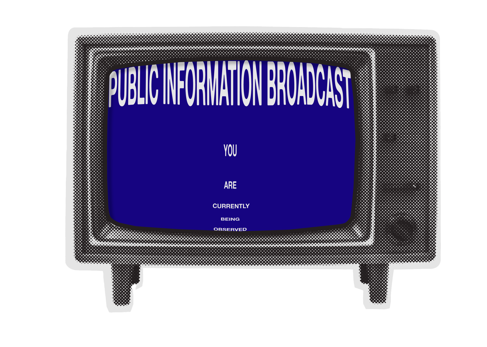
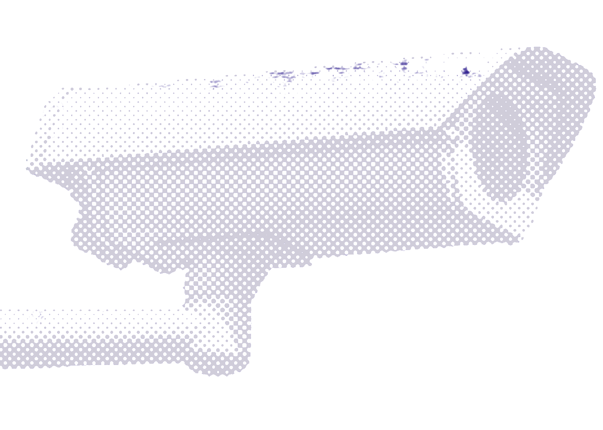
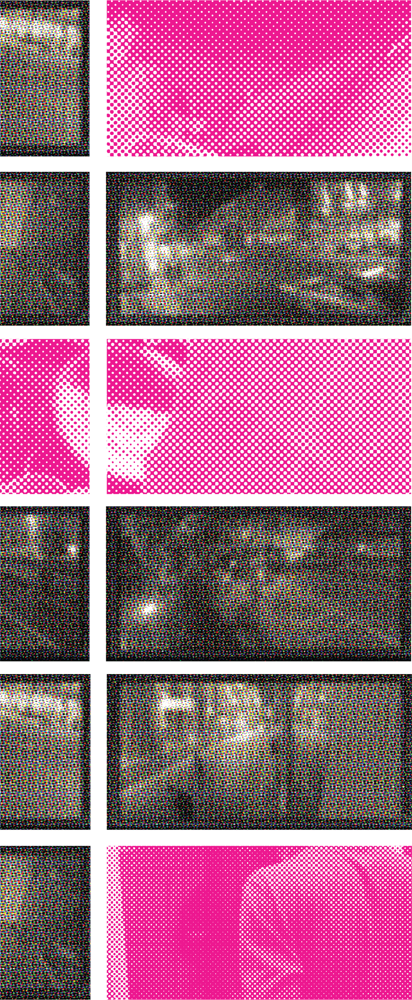
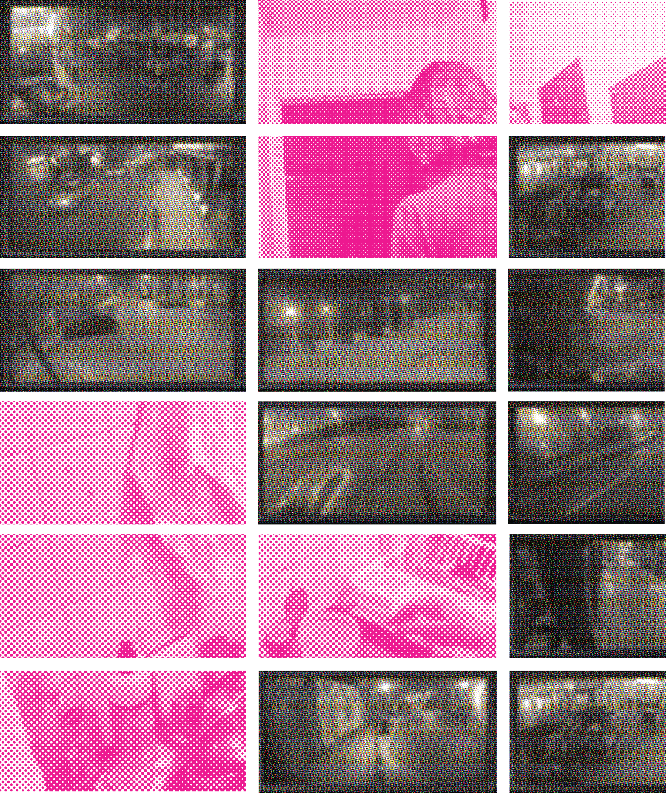
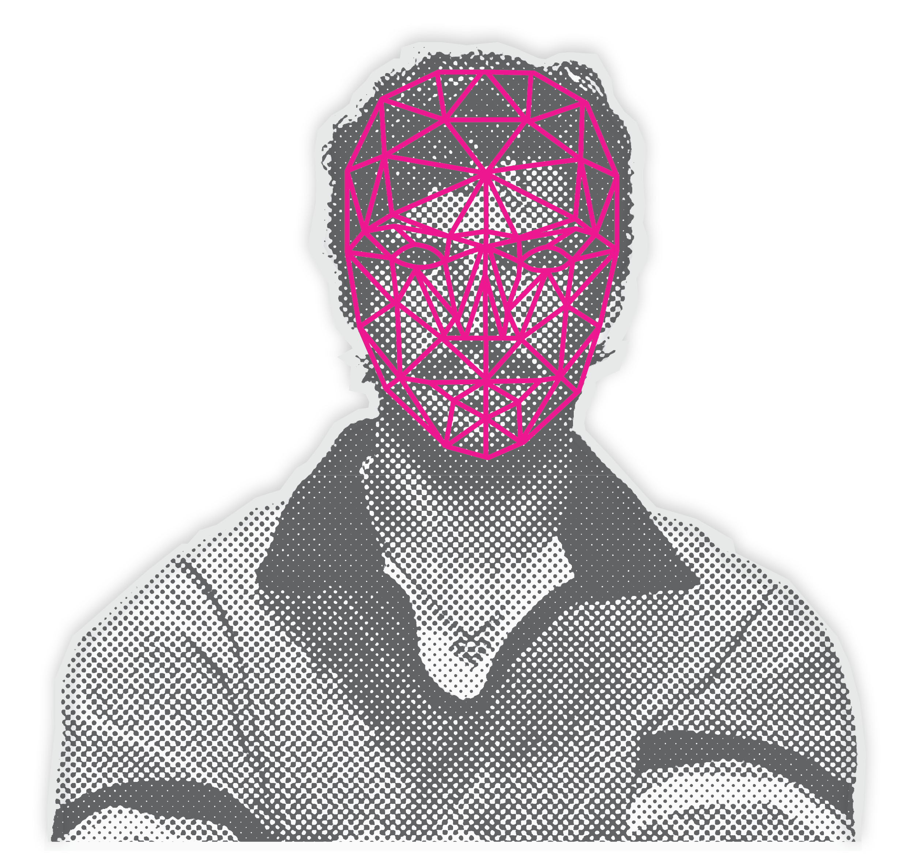

Surveillance was once imagined as a distant dystopia. A world where screens watched back and voices were never entirely private. In Nineteen Eighty-Four, observation was constant and invisible, embedded into the architecture of everyday life. Citizens could never know when they were being watched, only that they might be.
Today the mechanisms are quieter, but the logic remains familiar. Cameras line streets and buildings, algorithms trace behaviour, and systems quietly record the rhythms of daily life. Observation no longer feels extraordinary. It has become part of the background.
What Orwell understood was not simply the danger of technology, but the psychology of being watched. When visibility becomes permanent, behaviour changes. People learn to regulate themselves, adjusting actions and words in response to the possibility of observation.





Surveillance has long been linked to systems of social control. While monitoring technologies are often introduced in the name of safety or efficiency, they also reshape the relationship between individuals and power.
As surveillance becomes embedded within everyday environments, observation shifts from an occasional event to a continuous condition of modern life. Cameras, digital networks, and data systems record behaviour across public and private spaces, producing vast archives of information about individuals and their movements.1
